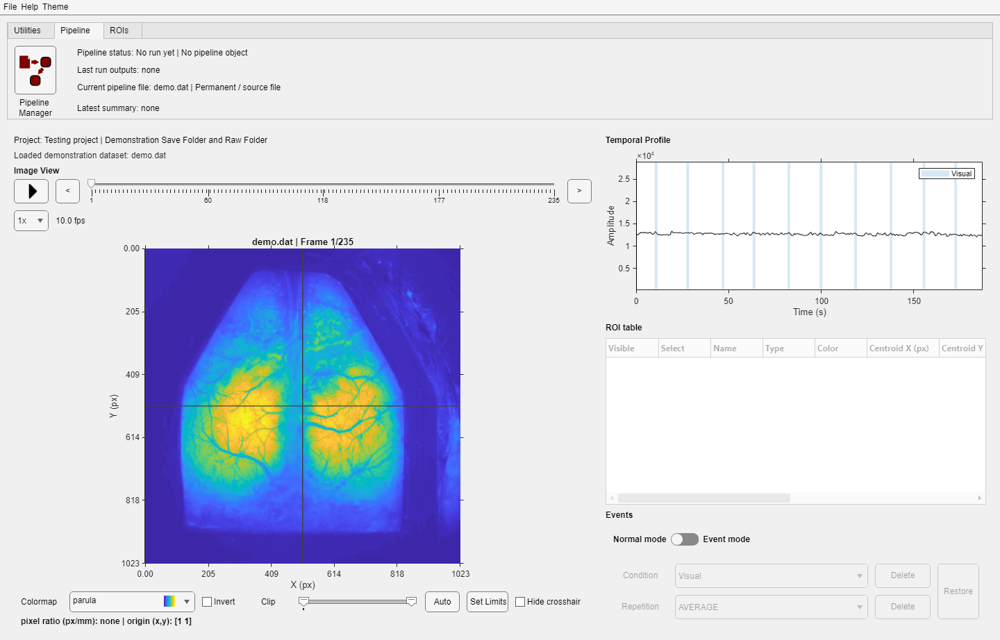

The current image file is the starting point shown in the graph; analysis functions are added from the searchable list.
The Pipeline Manager builds and runs a reproducible sequence of analysis functions on the active recording. Open a .dat or .umt file with an accessible Save Folder first.

The app lists available functions on the left, shows the processing graph in the center, and displays the selected step and its parameters on the right. The main file, data, and run controls are along the top.
The current image file is the starting point shown in the graph; analysis functions are added from the searchable list.
What is saved?
Image results returned to DataViewer are temporary by default. Save any result that must remain in the Save Folder. Permanent outputs and the processing records in dataHistory.mat and pipeLog.mat are written by Pipeline Manager.
Review destructive functions.
applyRegistrationTformOnFolder rewrites every .dat file in place and is effectively irreversible.
Continue with the Pipeline Manager reference.